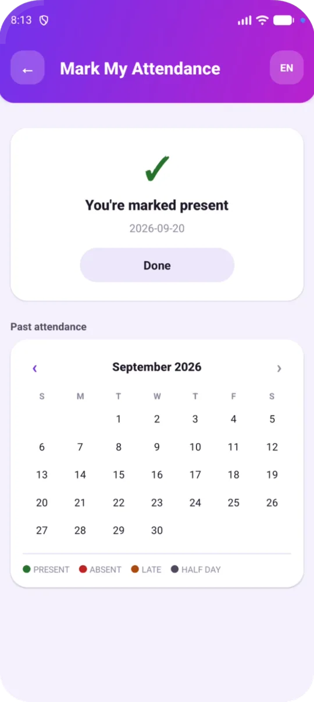

स्कूल
शिक्षकों की हाज़िरी GPS से, कोई मशीन ख़रीदे बिना
शिक्षक स्कूल पहुँचते ही अपने फ़ोन से हाज़िरी लगाते हैं। न बायोमेट्रिक मशीन ख़रीदनी है, न उसके आगे लाइन लगानी है, न उसकी मरम्मत करानी है। और छात्रों की हाज़िरी क्लास टीचर दो टैप में लगा देते हैं।
संक्षेप में: स्कूल एक बार अपनी लोकेशन और दायरा (रेडियस) सेव करता है, जो डिफ़ॉल्ट रूप से 100 मीटर होता है। जब शिक्षक ऐप में मेरी उपस्थिति दर्ज करें पर टैप करते हैं, तो फ़ोन अपनी GPS लोकेशन भेजता है और स्कूल से दूरी की जाँच फ़ोन नहीं, हमारा सर्वर करता है। शिक्षक स्कूल में हैं तो हाज़िरी लग जाती है। ज़्यादा दूर हैं तो चेक-इन नहीं होता, और ऐप बताता है कि वे कितनी दूर हैं। जिन फ़ोनों में नकली GPS ऐप, डेवलपर ऑप्शन, रूट या क्लोनर ऐप हो, उनसे भी चेक-इन नहीं होता।

कैसे काम करता है
GPS से शिक्षकों की हाज़िरी कैसे लगती है?
- स्कूल की लोकेशन सेव करें। प्रिंसिपल स्कूल में रहते हुए “मेरा वर्तमान स्थान उपयोग करें” पर टैप करते हैं और दायरा तय करते हैं।
- शिक्षक पहुँचकर चेक-इन करें। एक टैप, और फ़ोन अपनी GPS लोकेशन भेज देता है।
- फ़ैसला सर्वर करता है। दूरी हमारे सर्वर पर स्कूल की सेव की गई लोकेशन से नापी जाती है, इसलिए फ़ोन अपने-आप ख़ुद को “स्कूल में” नहीं बता सकता।
- रिकॉर्ड अपने-आप बनता है। हर शिक्षक का महीने भर का कैलेंडर बनता है: उपस्थित, अनुपस्थित, लेट और आधा दिन।
तुलना
GPS चेक-इन बनाम बायोमेट्रिक मशीन
कुछ ख़रीदना नहीं
बायोमेट्रिक मशीन ख़रीदनी, लगवानी और ठीक करवानी पड़ती है। GPS चेक-इन उन्हीं फ़ोनों से होता है जो शिक्षकों के पास पहले से हैं।
गेट पर लाइन नहीं
एक मशीन के आगे इंतज़ार करने की बजाय सब अपने-अपने फ़ोन से चेक-इन करते हैं।
जाँच हमारे सर्वर पर
शिक्षक की लोकेशन को स्कूल की सेव की गई लोकेशन और दायरे से मिलाकर हाज़िरी तय होती है।
नकली GPS नहीं चलता
जिस फ़ोन में नकली GPS ऐप हो, डेवलपर ऑप्शन चालू हों, जो रूटेड या जेलब्रोकन हो, या जिसमें क्लोनर ऐप हो, उससे चेक-इन नहीं होता।
रिपोर्ट ऐप में
हर शिक्षक और छात्र का महीने का कैलेंडर, और रिकॉर्ड के लिए हाज़िरी एक्सपोर्ट।
छात्रों की हाज़िरी भी
क्लास टीचर रोज़ ऐप में छात्रों की हाज़िरी लगाते हैं: उपस्थित, अनुपस्थित, लेट या आधा दिन। हर दिन उपस्थित रहने पर छात्रों को XP मिलते हैं और उनकी स्ट्रीक बनी रहती है। इसी तरह हाज़िरी गेमिफ़ाइड लर्निंग से जुड़ती है।
- सेक्शन के हिसाब से रिकॉर्ड क्लास टीचर और प्रिंसिपल के लिए।
- हर छात्र का कैलेंडर, जो छात्र को और पैरेंट ऐप में उनके अभिभावकों को दिखता है।
- हाज़िरी एक्सपोर्ट, रिकॉर्ड और निरीक्षण के लिए।
शिक्षक छुट्टी पर हों तो उनकी कक्षाएँ कौन लेगा?
जब किसी शिक्षक को अनुपस्थित या आधा दिन मार्क किया जाता है, तो उनके पीरियड टाइमटेबल में “सब्स्टीट्यूट चाहिए” की सूची में आ जाते हैं, साथ में यह भी कि उस समय कौन-से शिक्षक ख़ाली हैं। देखिए टाइमटेबल में सब्स्टीट्यूट का इंतज़ाम कैसे होता है।
सवाल-जवाब
GPS हाज़िरी: आम सवाल
शिक्षकों की GPS हाज़िरी कैसे काम करती है?
स्कूल अपनी लोकेशन और दायरा सेव करता है। शिक्षक स्कूल पहुँचकर “मेरी उपस्थिति दर्ज करें” पर टैप करते हैं, फ़ोन अपनी GPS लोकेशन भेजता है, और हमारा सर्वर स्कूल से दूरी जाँचता है। शिक्षक स्कूल में हैं तो हाज़िरी लग जाती है; ज़्यादा दूर हैं तो चेक-इन नहीं होता।
क्या शिक्षक अपनी लोकेशन नकली बना सकते हैं?
अगर फ़ोन नकली (मॉक) लोकेशन बताए, उसमें डेवलपर ऑप्शन चालू हों, फ़ोन रूटेड या जेलब्रोकन हो, या स्मार्ट गुरुकुल किसी क्लोनर ऐप के अंदर चल रहा हो, तो ऐप चेक-इन नहीं होने देता। हमारा सर्वर पुरानी लोकेशन और स्कूल के दायरे से बाहर की लोकेशन भी नहीं मानता। ये संकेत फ़ोन से आते हैं, इसलिए कोई भी GPS सिस्टम फ़िंगरप्रिंट मशीन जितना पक्का नहीं हो सकता, लेकिन नकली GPS की आम तरकीबें रोक दी जाती हैं।
स्कूल को कितना दायरा रखना चाहिए?
डिफ़ॉल्ट दायरा सेव की गई जगह से 100 मीटर है। बड़े कैंपस इसे 700 मीटर तक बढ़ा सकते हैं।
अगर किसी शिक्षक का चेक-इन न हो तो क्या करें?
ऐप वजह बताता है। कोई नकली GPS ऐप हो तो बंद कीजिए, डेवलपर ऑप्शन बंद कीजिए, स्मार्ट गुरुकुल को क्लोनर ऐप की बजाय सीधे खोलिए, और स्कूल में फिर से कोशिश कीजिए। एडमिन भी शिक्षक की हाज़िरी लगा सकते हैं।
क्या हमें बायोमेट्रिक मशीन चाहिए?
नहीं। GPS चेक-इन शिक्षकों के अपने फ़ोन से होता है, इसलिए कोई मशीन ख़रीदनी या ठीक करवानी नहीं पड़ती।
और जानें
एक महीना मुफ़्त आज़माएँ
हम आपका छात्र रजिस्टर इम्पोर्ट करते हैं और आपके स्टाफ़ को ट्रेनिंग देते हैं। एक महीने के असली इस्तेमाल के बाद आप फ़ैसला करें।